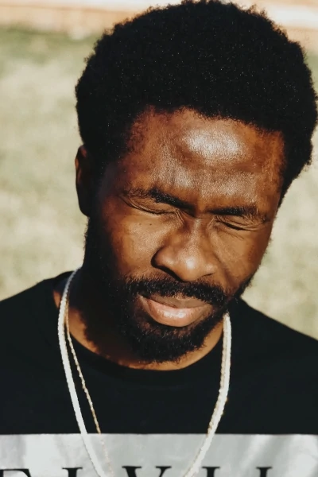
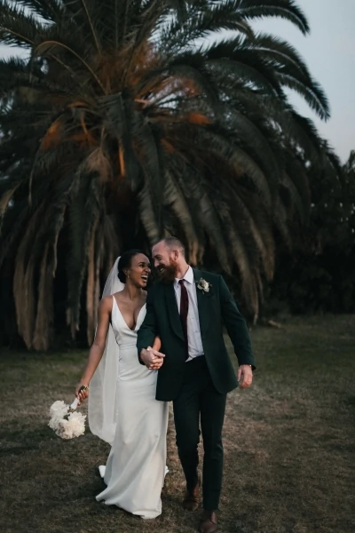
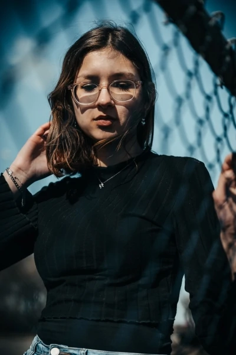
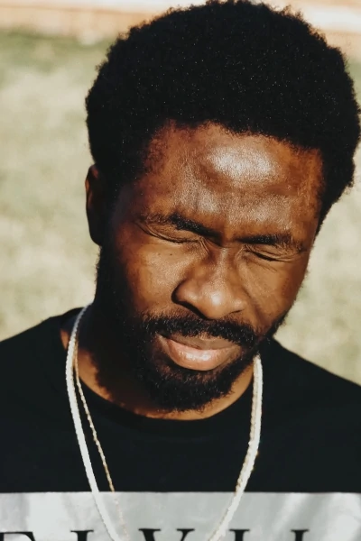
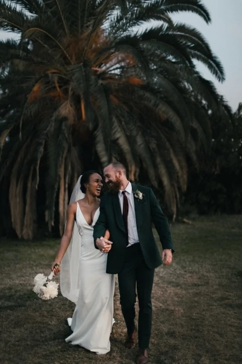
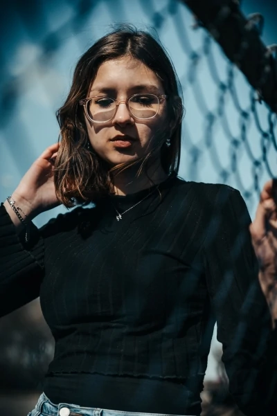

A propos de moi
Devenir photographe était pour moi une évidence. Comme si j’y étais prédestiné. Saisir un moment, une émotion, une situation, un endroit, une lumière et les rendre immortels, voilà ce qui me fait vibrer.
Nous passons notre vie à chercher le bonheur, et lorsque nous y touchons, nous n’avons qu’une envie : le figer au travers de photographies pour le savourer avec les personnes qui sont importantes à nos yeux, ou le partager au plus grand nombre. C’est ce que je vous propose : saisir ces merveilleux moments au travers de mon regard, mon approche, ma technique. Rendre ces moments immortels, afin que vous puissiez y puiser de l’amour, du bonheur, de la tendresse et de lumière à chaque fois que vous poserez les yeux sur vos photos.
Portfolio
 





Un portrait n’est pas une ressemblance. Dès lors qu’une émotion ou qu’un fait est traduit en photo, il cesse d’être un fait pour devenir une opinion. L’inexactitude n’existe pas en photographie. Toutes les photos sont exactes. Aucune d’elles n’est la vérité.
Mes services
Shooting photo
Pour capturer vos moments les plus précieux et garder un souvenir impérissable. Je me déplace en Île-de-France pour réaliser vos photos
350€/demi journée
Matériel, déplacement inclusRetouches
Vous souhaitez retoucher vos photos pour un résultat professionnel ? Bénéficier d’un rendu optimal pour vos publications
50€/photo
2 AR par photoAlbum photos
Partagez avec vos proches et vos clients les photos des moments partagés ensemble à travers un album photo personnalisé
400€ album A4
30 pages recto/versoDe manière inconsciente, je crois, je guette un regard, une expression, des traits ou une nostalgie capable de résumer ou plus exactement de révéler une vie